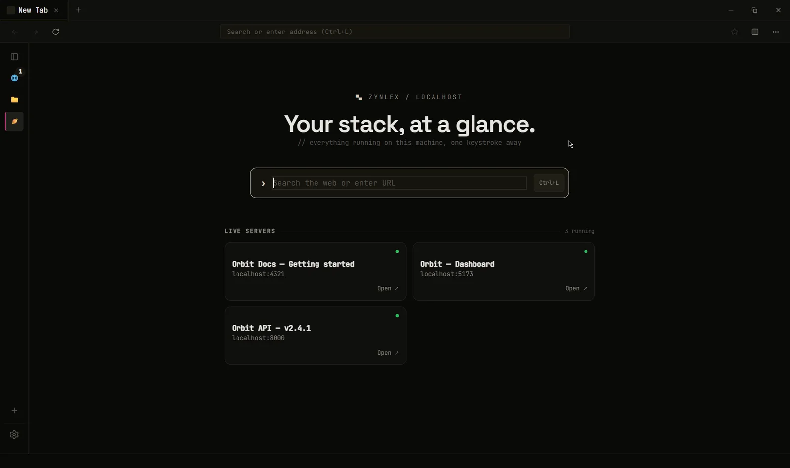
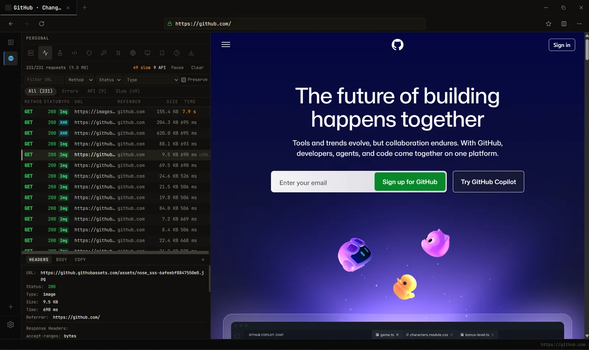
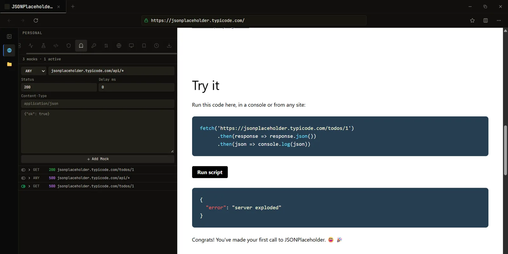
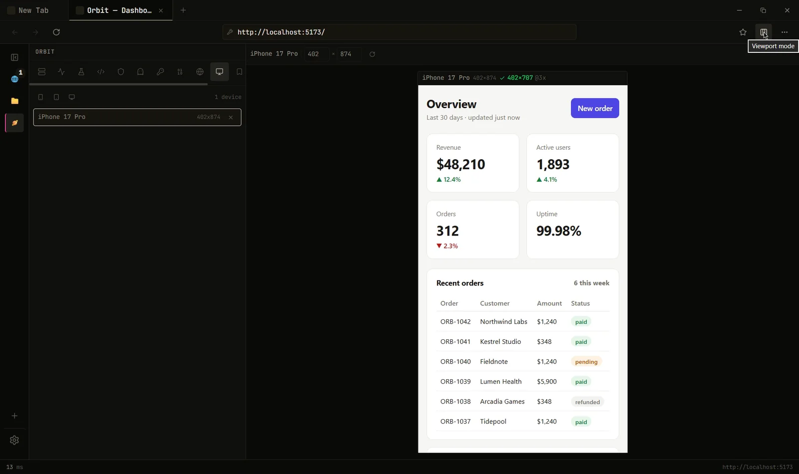
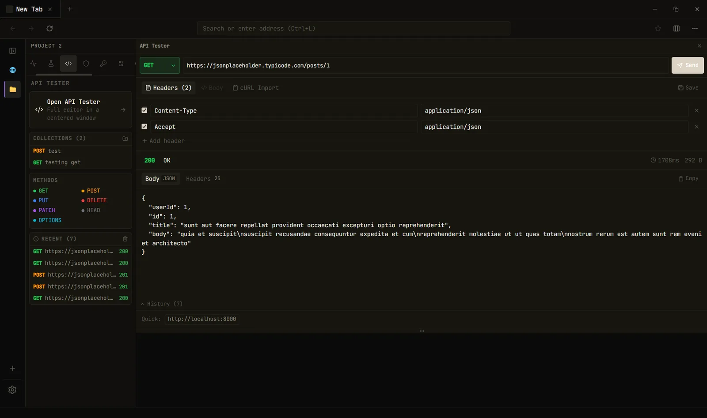

The minimal browser for web developers.
ZYNLEX finds the dev servers running on your machine and puts the network log, API mocking, device viewports and an API client in the browser itself. The things you'd otherwise open DevTools, Postman, Charles and a responsive tester for.
Free and open source · Windows 10 & 11 · Rust + Tauri, not Electron · no account, no telemetry
Four questions you ask all day, answered in one window.
Which port is that on? What did that request return? What happens when the API fails? How does it look on a phone? Each used to be a different app.
Your servers, on the new tab page
ZYNLEX scans the usual dev ports every few seconds, reads each page's title and shows what's running. Vite, Next.js, Astro, Storybook, Django, whatever. Add your own ports in settings.
- Label and pin the ones you care about
- Shows a server as stopped when it goes down

A network log per tab
Every request with method, status, type, size and timing, captured through WebView2's own API. There's no proxy to route through and no certificate to trust.
- Filter by errors, API calls or slow requests
- Response headers and bodies, copy as cURL or fetch()

Mock any response. No proxy.
Match a URL, set the status, body and delay, and the page gets your version. Or click Mock this on a real request and edit what came back. It works cross-origin, so you can build against a backend that doesn't exist yet.
- Fake the 500, the empty list, the 3-second endpoint
- Mocked requests are marked in the network log

Devices at their real size
Pick a phone or tablet and the page renders at its true width, pixel ratio and user agent, with touch. One device at a time, at 1:1, not a shrunken thumbnail.
- Current iPhone, Pixel, Galaxy and iPad sizes
- Server-side device detection sees the right client

An API client that ignores CORS
Requests run through Rust, so the page's CORS rules don't apply. Saved collections and cURL import, per project. Next to it: header rules per URL pattern, an inspector for meta tags, Open Graph and HttpOnly cookies, a JWT decoder, Base64 and a user-agent switcher.
- Workspaces keep each project's tabs, rules and requests apart
Ctrl+Kfinds all of it

No bundled Chromium. No sync. No extension host.
Tabs render with WebView2, the Chromium runtime that already ships with Windows, so heavy pages cost the same as in Chrome. The savings come from everything ZYNLEX doesn't run.
Measured on one Windows 11 machine with clean profiles. Method and numbers.
What it doesn't do.
Every developer feature sits on WebView2 APIs that only exist on Windows. macOS and Linux are on the roadmap.
If you need many viewports side by side or accessibility audits, Polypane and Responsively do that well.
Mocks and header rules apply to pages open in ZYNLEX, not to other apps on your machine. WebSocket handshakes aren't covered.
Questions people ask.
Can I use it as my everyday browser?
You can browse in it like any browser, and it is minimal: no sync, no extensions, no account. It's built around development work, so most people keep it open next to their editor rather than replacing their main browser.
Will websites work in it?
Yes. Tabs render with WebView2, Microsoft's packaging of Chromium, the same engine as Chrome and Edge. Pages look and behave the same.
How is it different from Chrome DevTools?
DevTools is a drawer inside a general browser. ZYNLEX puts the network log, device viewports and header rules in the browser's own sidebar, per tab and per project, and adds what DevTools doesn't have: localhost server detection, response mocking without a proxy, and an API client.
Do I need a proxy or certificate to mock responses?
No. Mocks are answered inside the browser before the request reaches the network, so there's nothing to install or trust. Cross-origin requests work too.
Why is it so small? Is it Electron?
It's not Electron. It's built with Tauri and Rust, and uses the WebView2 runtime that already ships with Windows instead of bundling its own copy of Chromium.
Does it collect any data?
No account, no telemetry, no analytics. The only network call it makes on its own is an update check against the project's GitHub releases. This page makes no third-party requests either.